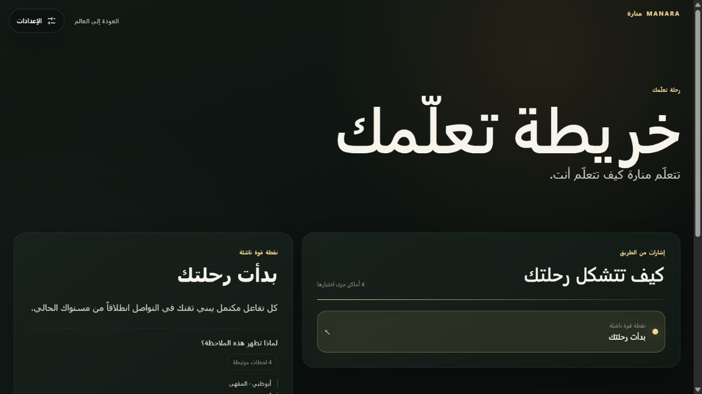

ARRIVE
Choose Abu Dhabi. Enter a café with a clear social goal.
TRAVEL THE ARAB WORLD THROUGH ITS ARABIC.
Arabic learners often discover that knowing Arabic is not the same as knowing what feels natural in a particular place. MANARA turns the Arab world into an immersive learning journey, helping each learner adapt the Arabic they already know - even if that is none - to real people, situations and everyday speech.
THE LEARNING MOMENT
MANARA begins with communication, then adds context only when it helps. The learner never leaves the social moment to enter a lesson screen.
Choose Abu Dhabi. Enter a café with a clear social goal.
Hear Arabic, then answer by voice, text or a safe practice choice.
If meaning is clear, the Local Guide may offer one more locally useful option.
Try it immediately. The Local Character continues naturally.
The mechanism is the innovation: understand first, add context with care, then let the learner reuse it without breaking immersion.
FROM ONE MOMENT TO A LEARNING SYSTEM

Your Fumble Map turns completed conversations into a small, useful picture of communication strengths, successful retries, local adaptation and concepts worth revisiting. It is not a grade. It is a record of movement.
Direct prototype screenThe prototype activates Abu Dhabi and Cairo across four scenarios, previews Casablanca, and places them inside a 39-city network vision. The same destination and scenario structure can expand city by city as content is reviewed.
MANARA respects MSA, dialect and heritage Arabic as knowledge the learner can carry forward.
Beginners, MSA learners, dialect learners and heritage speakers enter the same world from different starting points.
Optional conversational AI can make interactions more flexible; it does not decide what MANARA teaches.
MANARA moves Arabic beyond classroom abstraction. Place, culture and social context become part of the learning moment - without asking learners to discard the Arabic they already carry.
LEARN ARABIC NOT AS ONE DESTINATION,